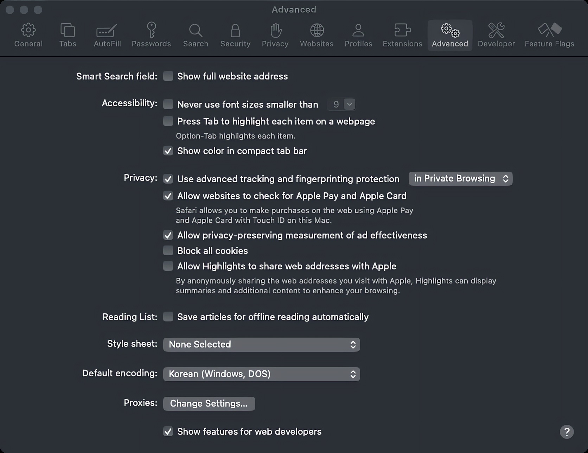
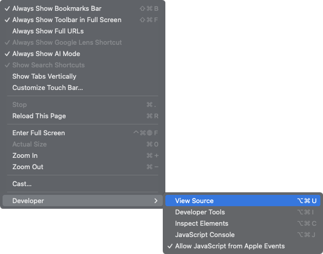
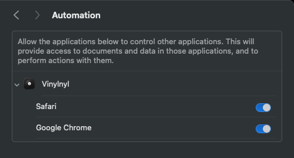

Set up Vinylnyl on macOS.
Vinylnyl reads Safari or a Chrome-based browser. Each needs one setting, once.
Safari
-
Show the developer settings
Open Safari › Settings › Advanced and tick Show features for web developers at the bottom.

-
Allow JavaScript from Apple Events
A Developer tab appears in the same window. Open it and tick Allow JavaScript from Apple Events.
Chrome, Edge, Brave, Vivaldi, Opera
-
Allow JavaScript from Apple Events
In the menu bar, open View › Developer and click Allow JavaScript from Apple Events so it shows a check mark.
Edge, Brave, Vivaldi and Opera have the same item in the same menu.

-
Then, allow Vinylnyl to control the browser
Play a song. macOS asks whether Vinylnyl may control your browser: click OK.
Missed it? Open System Settings › Privacy & Security › Automation and turn on your browser under Vinylnyl.

Still waiting for music?
- Arc and Dia
- They don’t have the Allow JavaScript from Apple Events setting, so Vinylnyl can’t read them. Play music in Safari or Chrome instead.
- Firefox
- Use the optional browser extension; see the download section.
- Turned it on, still nothing
- Reload the music tab once, then check the Automation switch above.